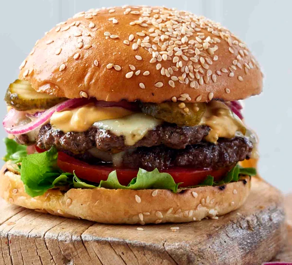

Ultimate beef burger

Description
Make these ultimate beef burgers for your next barbecue, piled high with
toppings including our special sauce, sweet and sour onions, emmental
cheese, gherkins, lettuce and more
Ingredients
- 500g steak mince
- ½ Worcestershire sauce celery salt 1/2 tsp red onion
- a pinch chilli flakes
-
4 (Waitrose and M&S sell brioche-style burger buns) brioche burger buns,
toasted
- 2 vine tomatoes, sliced to serve
- 8 slices emmental
- sliced to serve gherkins
- to serve frilly lettuce
SWEET AND SOUR ONIONS
- 2 tbsp red wine vinegar
- 2 tsp golden caster sugar
- ½ red onion, very finely sliced
SECRET BURGER SAUCE
- 2 heaped tbsp mayonnaise
- 2 tsp French’s American mustard
-
1 tbsp gherkins, very finely diced plus 1 tsp vinegar from the jar
- 1 tbsp ketchup
Steps
-
Mix the burger sauce ingredients together. If you have time, leave the
sauce ingredients for a few hours or even make it the day before.
-
To make the sweet and sour onions, mix the vinegar and sugar in a bowl
and toss the sliced onions in it. Stir now and again while you make the
burgers.
-
Put the mince in a bowl. Grate the onion on the course side of a box
grater.The tougher outer layers will refuse to grate, so just discard
these. You just want the grated purée. Add the grated onion to the mince
bowl along with a splash of Worcestershire sauce, celery salt, and
chilli flakes. Mix everything with your hands and divide into 8 equal
portions.
-
Flatten each portion into a very thin patty.They will spring back in the
pan so make them much thinner than you think you should.
-
Heat a non-stick frying pan on a high heat.Turn the oven to 200C/fan
180C/gas 6. Fry the patties for 2 minutes each side.You won’t be able to
get all 8 in one pan, so as you finish, transfer them to a baking
tray.When you have 8, top each with a square of cheese and put in the
oven for 2-3 minutes until the cheese melts.
-
Put some sauce on each bun base. Add lettuce and a couple of slices of
tomato. Stack up 2 patties with cheese, then add sauce, the onions and
gherkins. Add more sauce, the bun tops and skewer each to hold it
together.